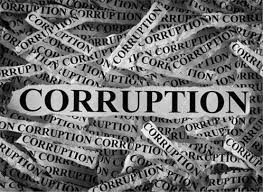
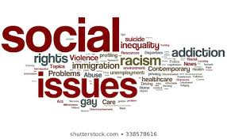

Social Issues in India
India emerged as an independent nation-state on 15th August 1947, after a long struggle against the British colonial yoke. The country is a Sovereign, Socialist, Secular, Democratic Republic with a parliamentary system of government. Though India has shown tremendous growth in all spheres of national life in the years after independence, yet many problems plague the everyday social life; the problems, many a time, are interrelated.Poverty, Population, Pollution, Illiteracy, Corruption, Inequality, Gender discrimination, Terrorism, Communalism, Lack of Infrastructure, Unemployment, Regionalism, Casteism, Alcoholism, Drugs Abuse, Violence against Women are the major ones.
Information about some common social issues in India
Unemployment

If the word demands a definition, “unemployment”, may be elaborated as a state of not finding work by an individual who is fit and willing to work. It is usually measured in percentage; the number of individuals without work out of the total “labour force” of the country or specific social groups.Labour force is the term collectively applied to the total number of individuals within the population who are willing and capable of doing work. Unemployment rate of a country is indicative of its socio-economic health.
Unemployment casts some short term ripples throughout the economy by reducing an individual’s contribution in terms of services and taxes. The unemployed also does not possess the power of purchase, thus in effect contributing to bringing down demand of goods in the market and creating more unemployment. This vicious cycle creates a cascading effect throughout the economy and trickles down to different social strata. India currently (2016) has a population of about 1.3 billion. According to a recent United Nations Development Programme (UNDP) report, during the period of 1991 to 2013, Indian economy has experienced maximum growth and yet less than half number of Indians seeking jobs have managed to land one during this period. State wise figures reveal that Tripura has the highest unemployment rate in the country at 19.7% while Gujarat has the lowest at 0.9% in 2015-2016. On the other hand, unemployment rate is higher among women at 8.7 percent versus 4.3% among men. Women unemployment rate is higher in the rural areas than in urban sectors of the country. Experts fear that at present, India is experiencing a jobless growth with not enough jobs being created for its working age population (15-64 years). There is ample skepticism afloat about the country not being able to cash in on its demographic bonus, predicted to be 869 million by year 2020 – world’s largest.
Corruption
Corruption is the use of unethical methods to get some advantage by others. It has become one of the big factors of obstructing the development of the individual and country. You can use this Corruption essay for your kids and school going children for essay writing purpose at home or schools. Following Essay on Corruption are written using very simple and easy to understand English language.
Corruption is highly spread in the field of civil service, politics, business and other illegal fields. India is a famous country for its democracy but it is corruption which disturbs its democratic system. Politicians are highly responsible for all type of corruption in the country. We chose our leaders by having lots of expectations to them to lead our country in the right direction. In the starting they make us lots of promises however, just after the voting they forget all that and involve in corruption. We are sure that our India would be corruption free a day when our political leaders would be free of greediness and use their power, money, status and position in right direction to lead the country, not their own luxury and personal wishes.
We should select very honest and trustworthy leaders to lead our India just like our earlier Indian leaders such as Lal Bahadur Shastri, Sardar Vallabh Bhai Patel, etc. Only such political leaders can reduce and finally end the corruption from India. Youths of the country should also need to be aware of all the reasons of corruption and get together to solve it in group. Increasing level of the corruption needs to take some heavy steps to get control over it.
Dowry System

Marriage is an integral part of society, a source of joy and festivities as well as of new beginnings. Yet, one of the longest standing evils associated with marriage from a woman’s point of view in the Indian society is the Dowry system. Despite a lot being said and done against the custom, it is still prevalent in the 21st century, in both subtle and obvious ways. The root of a host of social atrocities against women, the custom of presenting dowry is the crudest expression of the male-dominance in the society. It is most often the mandatory custom of a girl’s parents having to provide a considerable amount of cash, gold in the form of jewelry, electronic equipment, movable or immovable properties, to the groom and his family, at the time of marriage. Although the origin of the custom lies with parents trying to assure financial stability for their daughters, in current perspective it has translated into parents paying up for the assurance of well-being of their daughters. The jewelry and cash that a bride brings with her from her parents’ house is often referred to as “Streedhan” and in theory is the property of the girl, but in reality it is often treated as their rightful due by the groom’s family.
The sum to be paid as dowry has no set standard, the yardstick greatly depends on the groom’s profession/social standing and is often perceived as the groom’s family as the compensation of efforts they have made to educate their boy. In a more subtle perspective, one may define this custom as the unquestioned idea that the girl’s family is inferior in standing with the boy’s family, no matter what her qualities are. Thus they need to be on their best behavior and offer lavish “gifts” to please the boy’s family. This ideal is so ingrained in the psyche of a large number of Indians, they either practically ruin themselves financially in order to pay for the appropriate price of the chosen groom, or make a bid to eradicate the prospect of this financial burden by selective gender-biased abortion or female infanticide. This exploitative system that has turned the custom of giving gifts and well wishes into a compulsory demand for money, respect and subjugation, is the one of the major contributing factors hindering the growth of the Indian society where being a woman is still viewed synonymous to being a burden.
Caste System

Caste, which is also known as ‘Jati’ or ‘Varna,’ can be defined as the hereditary classes of Hindu society or the classification of individuals into hierarchically ranked classes that becomes the identity of an individual at the time of his/her birth. Going by the Hindu shastras, four hereditary castes exist in India, namely Brahmin, Kshatriya, Vaisya and Sudra.
The Brahmins are at the top of the caste hierarchy and comprise of scholars and priests. The next in line are Kshatriyas who are regarded to be soldiers and political leaders. These are followed by Vaishyas or merchants. The last in the hierarchy are Sudras who are usually servants, labourers, artisans or peasants. There are also the untouchables who are considered as outcaste and perform occupations like skinning dead animals and scavenging. The untouchables do not fall in the ranked castes. The people of these classes derive their livelihood from specific occupations and the children born in their families follow the suit, acquiring the appropriate occupation as per their caste or jati, thus, maintaining the hierarchical ranking of occupations and hereditary occupational specialization.Proper rituals, rules, and regulations govern the occupational pursuits and appropriate social behaviour of the people of these classes, including rules related to marriage as well.
The Brahmins are at the top of the caste hierarchy and comprise of scholars and priests. The next in line are Kshatriyas who are regarded to be soldiers and political leaders. These are followed by Vaishyas or merchants. The last in the hierarchy are Sudras who are usually servants, labourers, artisans or peasants. There are also the untouchables who are considered as outcaste and perform occupations like skinning dead animals and scavenging. The untouchables do not fall in the ranked castes. The people of these classes derive their livelihood from specific occupations and the children born in their families follow the suit, acquiring the appropriate occupation as per their caste or jati, thus, maintaining the hierarchical ranking of occupations and hereditary occupational specialization.Proper rituals, rules, and regulations govern the occupational pursuits and appropriate social behaviour of the people of these classes, including rules related to marriage as well.
Poverty

“Poverty is humiliation, the sense of being dependent on them, and of being forced to accept rudeness, insults, and indifference when we seek help.” —Latvia 1998In the simplest term, poverty may be defined as a social condition where individuals do not have financial means to meet the most basic standards of life that is acceptable by the society. Individuals experiencing poverty do not have the means to pay for basic needs of daily life like food, clothes and shelter.Poverty also staves people off from accessing much needed social tools of well-being like education and health requirements. The direct consequences stemming from this problem are hunger, malnutrition and susceptibility to diseases which have been identified as major problems across the world. It impacts individuals in a socio-psychological way with them not being able to afford simple recreational activities and getting progressively marginalized in the society.The term poverty is interconnected with the notion of the poverty line/ threshold that may be defined as the minimum figure of income that is required in a particular country for maintaining the socially acceptable quality of life in terms of nutritional, clothing and sheltering needs. The World Bank has updated its international poverty line figures to 1.90 USD (Rs. 123.5) per day on October 2015 (based on prices of commodities in year 2011-2012), from 1.5 USD(Rs. 81) as a response to the changes in the cost of living across the world as per current economy. The organization estimates that – “Just over 900 million people globally lived under this line in 2012 (based on the latest available data), and we project that in 2015, just over 700 million are living in extreme poverty.”
Causes of poverty
- Demographic – the main factor that contributes to poverty-ridden state of the country from a demographical point of view is the problem of over population. The growth of population in the country has so far exceeded the growth in economy and the gross result is that the poverty figures have remained more or less consistent. In rural areas, size of the families is bigger and that translates into lowering the per capita income values and ultimately lowering of standard of living. Population growth spurt also leads to generation of unemployment and that means diluting out of wages for jobs further lowering income.
- Individual – individual lack of efforts also contribute towards generating poverty. Some people are unwilling to work hard or even not willing to work altogether, leaving their families in the darkness of poverty. Personal demons like drinking and gambling also leads to draining of the family income inciting poverty.
- Political – in India, socio-economic reform strategies has been largely directed by political interest and are implemented to serve a choice section of the society that is potentially a deciding factor in the elections. As a result, the issue is not addressed in its entirety leaving much scope of improvements.
- Climatic – maximum portion of India experiences a tropical climate throughout the year that is not conducive to hard manual labour leading to lowering of productivity and the wages suffer consequently.
Gender Discrimination

India is rising. Our country is zooming ahead in all fields that count at break neck speed. The boom in economy, innovative technologies and improved infrastructure are testament to that. Women have provided considerable contribution to this progress, with them taking up every possible job. From preparing the morning breakfast to sending the Orbiter to Mars, they have made their presence felt in every sphere of life. Yet in every strata of the Indian society, there still remains a cloud of apprehension and insecurity when a girl child is born. Discrimination against a girl begins at her conception and shapes up to be the monster she has to fight every moment of her waking existence. Her second rate citizenship is reflected in the denial of fundamental needs and rights and in such harmful attitudes and practices as a preference for sons, female genital mutilation, incest, sexual exploitation, domestic abuse, discrimination, early marriage, less food and less access to education. Deep-rooted patriarchal perceptions project women as liabilities. There lurks in the Indian conscience, a foul monster of hypocrisy, when the Kali-Durga-Lakshmi worshippers take no time in putting women down or dismissing them as a mere afterthought.
Traditions and rituals outline the existence of the Indian girl child. Amidst uproars of gender equality and enforcement of laws protecting their wellbeing, female infants are still found dumped in trash, by the dozens. Unborn fetuses continue to be sniffed in the womb and terminated without second consideration if their existence is even hinted at. As more and more female fetuses are still being selectively aborted after illegal pre-natal sex determination, the number of female infants per 1000 male infant is rapidly declining. Skewed sex ratio is a silent emergency. But the crisis is real, and its persistence has profound and frightening implications for society and the future of mankind. Continuing preference for boys in society, for the girl child the apathy continues, the child sex ratio in India has dropped to 914 females against 1,000 males, one of the lowest since Independence according to Census 2011. According to global statistics, the normal child sex ratio should be above 950:1000. While southern states like Kerala can boast of a ratio of 1084 females per 1000 males, the most alarming scenario prevails in the northern states like Haryana, Rajasthan and even Delhi, with number of girl child as low as 830 per 1000 male children.
Drugs

The northern Indian state of Punjab has witnessed a sharp increase in the number of drug-related deaths this year. BBC Punjabi's Arvind Chhabra investigates why the drug menace has become worse in the state.Drugs have been a scourge in Punjab for years now - once a transit point on the drug route, the state has now become a major consumer base. Punjab's health minister Brahm Mohindra told the BBC his government had reduced the inflow of drugs into the state. But he could not explain why drugs had claimed more lives in 2018 than in previous years.
"It's not clear what concoction is causing [the] deaths. But so many deaths have happened. It is a serious and unfortunate thing," he said. The All India Institute of Medical Sciences in Delhi conducted the first comprehensive study in 2015 to estimate the magnitude of drug addiction in Punjab - and the report concluded that there were more than 200,000 addicts in the state.
Ms Devi says Ricky started using drugs when he was still in school and, eventually, he dropped out.In the early days, he was addicted to cough syrups and injections but he gradually turned to heroin, locally known as chitta. At one point, his mother recalls, Ricky wanted to quit and even asked her for help. But she did not know that a rehab centre was an option.
Click to know more about social issues:
